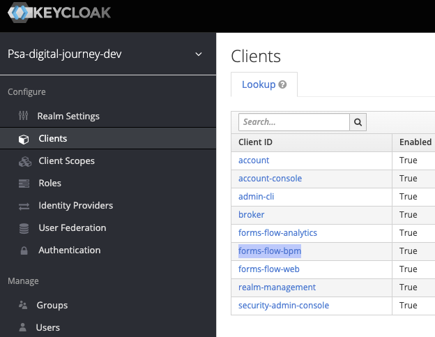
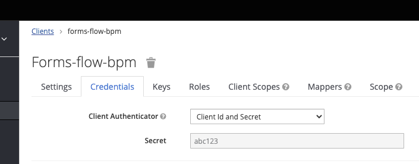
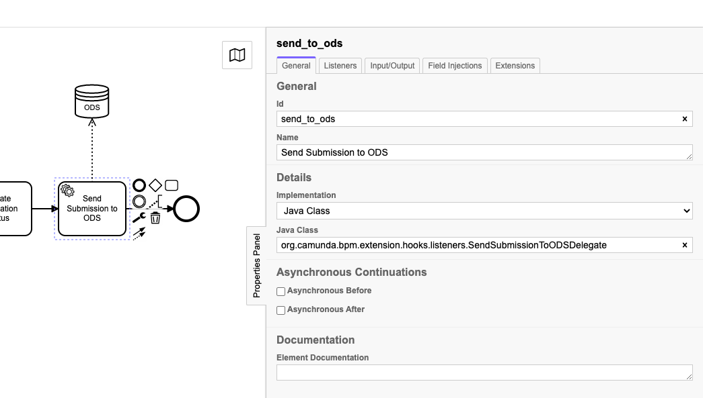
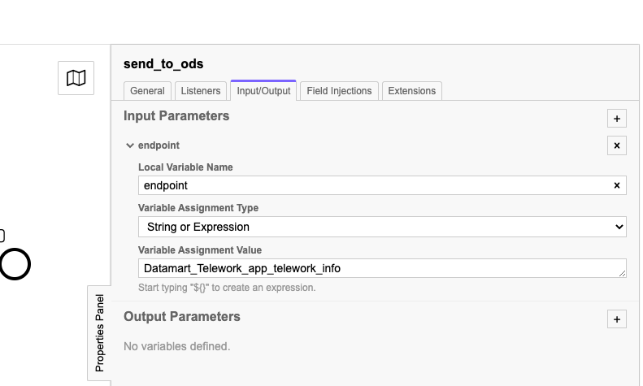
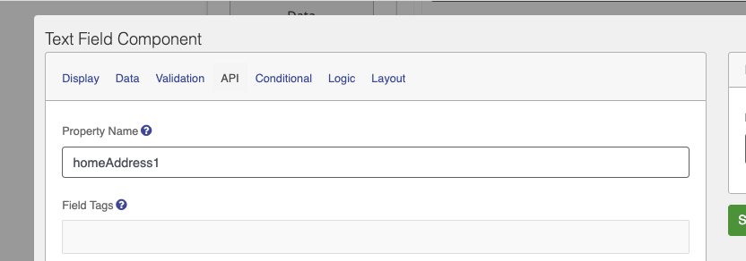
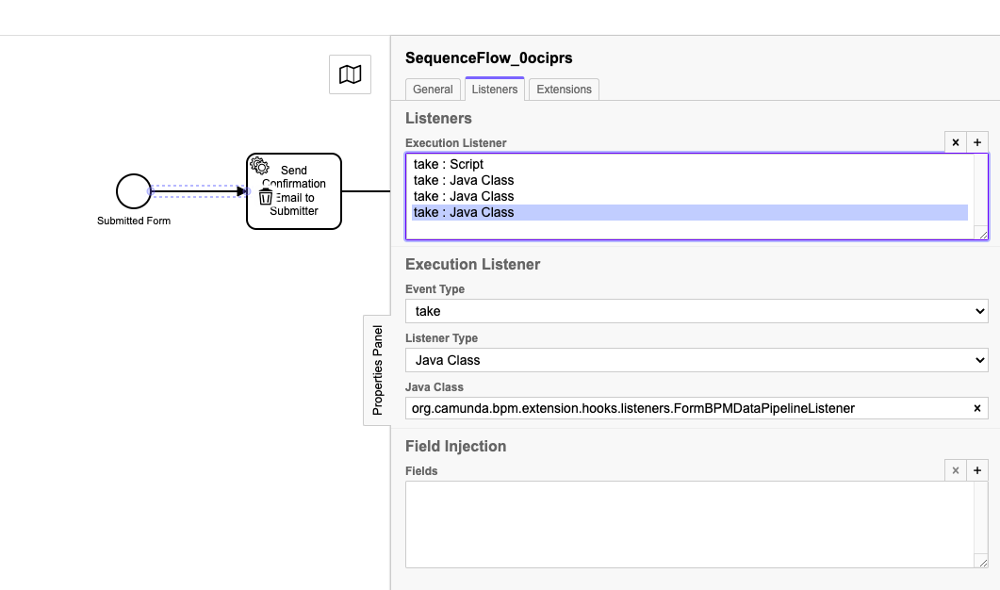

Camunda
This document contains information and HOWTOs on custom Camunda extensions made for use for the PSA Digital Journeys project. This includes things like how to send an email as part of a Camunda workflow, and how to push submissions to the ODS.
Deploying Workflow to platform
In order to deploy a new workflow to the platform, or update an existing one, you have to use the Camunda REST API.
Instructions on how to do this using Postman, can be found in the Formsflow.ai repository.
Notes
baseUrl and keycloakTokenUrl should be updated to the values in the following table based on the environment you're deploying to.
| Environment | baseUrl | keycloakTokenUrl |
|---|---|---|
| Dev | https://digital-journeys-camunda-dev.apps.silver.devops.gov.bc.ca/camunda | https://digital-journeys-keycloak-dev.apps.silver.devops.gov.bc.ca/auth/realms/psa-digital-journey-dev/protocol/openid-connect/token |
| Test | https://digital-journeys-camunda-test.apps.silver.devops.gov.bc.ca/camunda | https://digital-journeys-keycloak-test.apps.silver.devops.gov.bc.ca/auth/realms/psa-digital-journey-test/protocol/openid-connect/token |
| Production | TBD | TBD |
A value for the client_secret can be found using the Keycloak admin interface
| Environment | Keycloak Admin Console |
|---|---|
| Dev | https://digital-journeys-keycloak-dev.apps.silver.devops.gov.bc.ca/auth/admin/psa-digital-journey-dev/console/ |
| Test | https://digital-journeys-keycloak-test.apps.silver.devops.gov.bc.ca/auth/admin/psa-digital-journey-test/console/ |
| Production | TBD |
- Navigate to
Clients->forms-flow-bpm - You can find the secret in the
Credentialstab
 
Sending submission data to the Telus operational Data Store (ODS)
In order to support analytics of submission data for digital Journeys, submission data is pushed from the Formsflow application to the ODS. This can be added to a Camunda workflow by using the custom SendSubmissionToODSDelegate.
This will send the given form submission (based on the formUrl execution variable), to the given ODS endpoint, with the submittors IDIR and BCGov GUID added as properties.
How?
- Create a new Service Task in your workflow
- Select
Java Classas the "Implementation" - Set
Java Classtoorg.camunda.bpm.extension.hooks.listeners.SendSubmissionToODSDelegate

- Add an Input Parameter named
endpointin theInput/Outputtab of the service task. Set the Variable Assignment Type to "String or Expression" and "Variable assignment Value" to the name of the endpoint you want to send the submission to. Example: In case of the telework form, this isDatamart_Telework_app_telework_info. The

Details
Names of the fields that are sent to the ODS are taken from the "Property Name" found on each component in the Form Builder as seen below. All form fields are sent to the ODS as is, with the exception of any file uploads, where the file content itself is replaced with the name of the file uploaded (comma separated in case of multiple files).

Execution Variables
By default, the platform makes the following variables available to use in a workflow for all Submissions:
| Property | Description |
|---|---|
| applicationId | Unique identifier of the application |
| formUrl | Full URL to the submission |
| submitterName | Identifier of the person submitting the application |
| GUID | BCGov GUID of the person that submitted the application (If logged in with IDIR) |
| IDIR | IDIR of the person that submitted the application (If logged in with IDIR) |
| submissionDate | Timestamp of when the application was submitted |
If any other properties from the submission will be used by the workflow, The org.camunda.bpm.extension.hooks.listeners.FormBPMDataPipelineListener listener needs to be added at a step before the value is to be used. This Listener, makes all values from the submission available to be used by the workflow, based on the corresponding "Property Name" as defined in the Form builder.
How?
- Add a new "Execution listener" in the Listeners tab of a Sequence flow.
- Set "Event Type" to
take, "Listener Type" toJava Classand "Java Class" toorg.camunda.bpm.extension.hooks.listeners.FormBPMDataPipelineListener
You can now use values from the form submission in any logic specified after the sequence flow this listener was added to.
